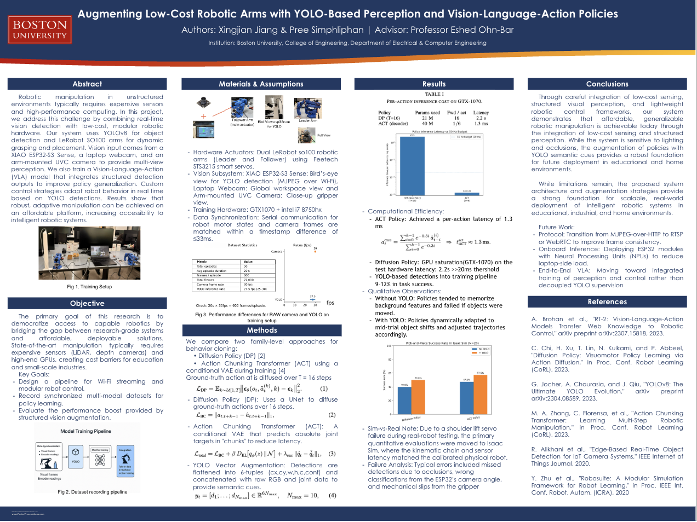
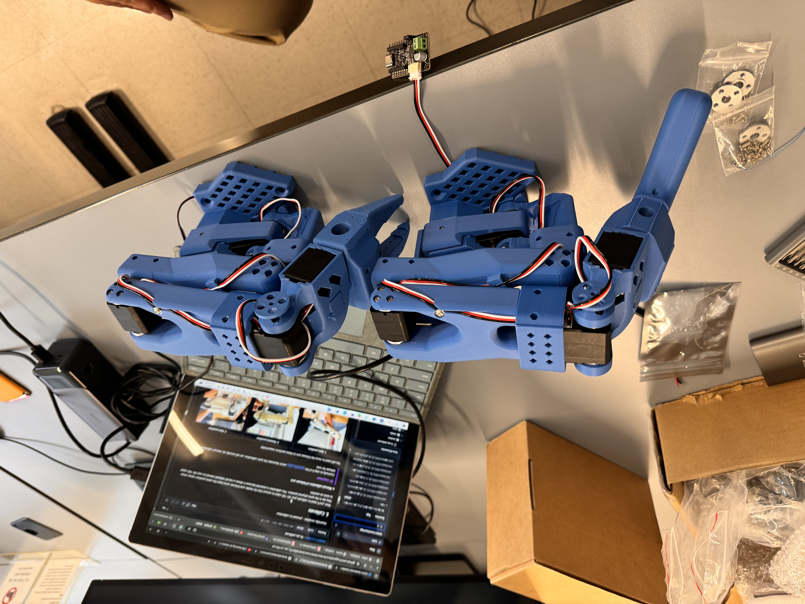
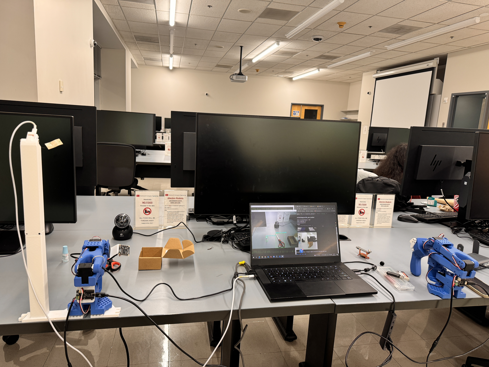

Open Source Robotic Manipulation System
Spring 2025
Project Description
This project developed a low-cost robotic manipulation system that combined real-time object detection, multi-camera vision, and LeRobot-controlled 6-DOF robot arms. The goal was to build an end-to-end platform that could observe a scene, collect synchronized training data, and use learned policies for manipulation.
The system brought together embedded vision streaming, dataset generation, policy learning, and mechanical integration. I enjoyed this project because it connected robotics, embedded systems, and machine learning in a way that felt both research-driven and deeply hands-on.
My Responsibilities
- Built the manipulation platform using YOLOv8, multi-camera input, and LeRobot-controlled 6-DOF arms.
- Designed an embedded vision pipeline with the Seeed Studio XIAO ESP32S3 Sense module to stream MJPEG video over Wi-Fi for remote inference.
- Built datasets by aligning robot joint states with images and bounding boxes for policy training.
- Trained and deployed behavior cloning models including Diffusion Policy and Action Chunking Transformer with YOLO-based feature augmentation.
- Designed 3D-printed camera mounts and contributed to ESP-IDF firmware, calibration, and real-time synchronization.
Skills I Learned
- Embedded vision streaming and remote inference pipelines.
- Robot learning workflows, dataset alignment, and behavior cloning.
- Mechanical integration for perception hardware.
- Calibration and synchronization in multi-sensor robotic systems.
Awards
- Accepted to the National Collegiate Research Conference 2026.
- Presented as a poster at Harvard University.
Project Links
Photos




